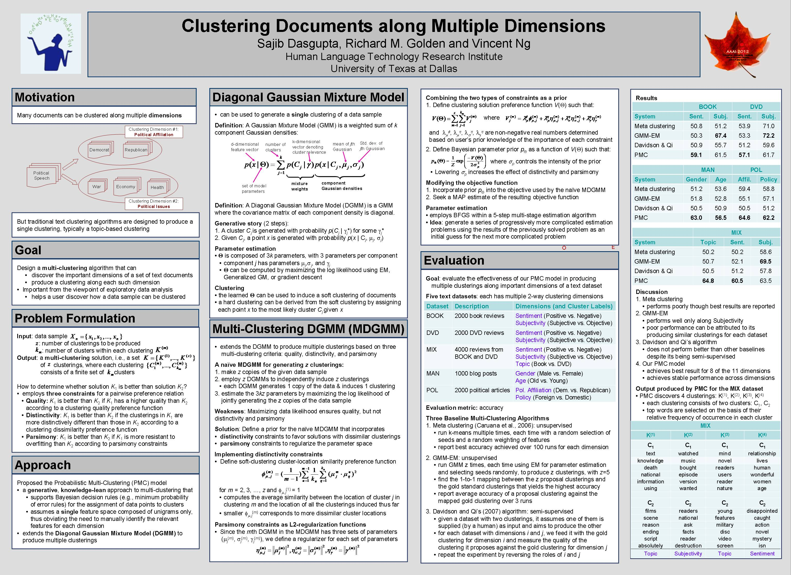

Clustering Documents along Multiple Dimensions
Sajib Dasgupta, Richard M. Golden, and Vincent Ng.
Proceedings of the 26th AAAI Conference on Artificial Intelligence, pp. 879-885, 2012.
Click here for the
PostScript or PDF
version.
The talk slides are available here.
Abstract
Traditional clustering algorithms are designed to search for a single clustering
solution despite the fact that multiple alternative clustering solutions
might exist for a particular dataset.
For example, a set of news articles might be clustered by topic or
by the author's gender or age.
Similarly, book reviews might be clustered by sentiment or
comprehensiveness. In this paper, we address
the problem of identifying alternative clustering solutions
by developing a Probabilistic Multi-Clustering (PMC) model that
discovers multiple, maximally different clusterings of a data sample.
Empirical results on six datasets representative of real-world applications show that our PMC model exhibits superior performance to
comparable multi-clustering algorithms.
BibTeX entry
@InProceedings{Dasgupta+Golden+Ng:12a,
author = {Sajib Dasgupta and Richard M. Golden and Vincent Ng},
title = {Clustering Documents Along Multiple Dimensions},
booktitle = {Proceedings of the 26th AAAI Conference on Artificial Intelligence},
pages = {879--885},
year = 2012
}
